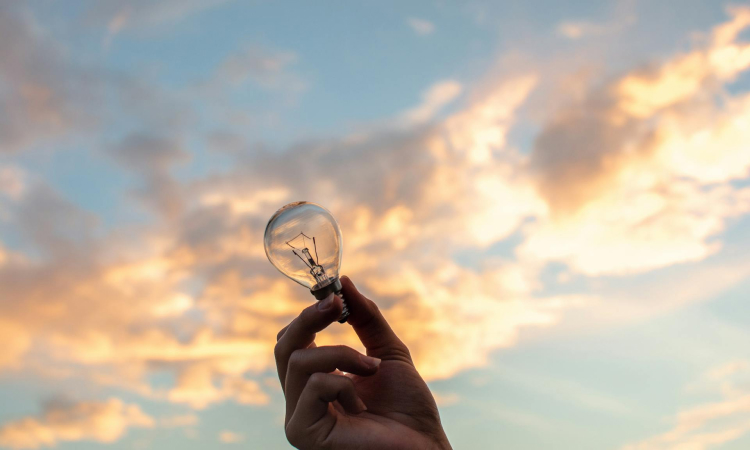
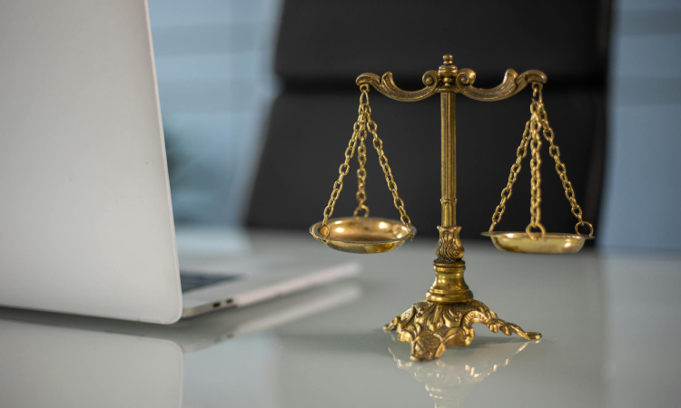
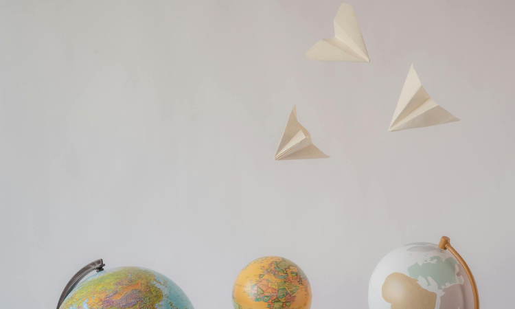
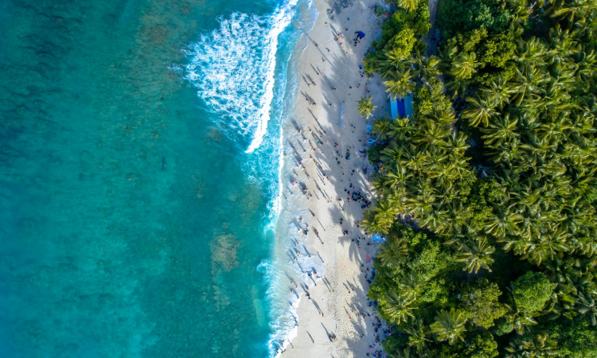

HOME > 그룹소개 > 그룹개요
그룹개요
“ 웅진은 남과 다르게 보고
새롭게 생각합니다. ”
웅진그룹은 1980년 창립 이후 창조적 발상으로 고객의 삶을 향상시키고 새로운 문화를 창출해 왔습니다.
교육·출판으로 시작하여 생활환경과 식품사업으로 영역을 넓혀 성장하였고, 2007년 지주회사 체제를 수립하여 세계적인 경쟁력 확보를 위한 발판을 마련하였습니다.
웅진은 새로운 사업분야에 진출하여 끊임없는 도전을 성공으로 이끌어 나가는 동시에 웅진의 창조혁신을 꽃피운 긍정과 사랑의 정신을 소중하게 키우고 있습니다.
-

- 창조
- 남다른 발상과 차별화 전략을 추구하며 창의적인 생각을 존중하고 구체화하기 위해 노력합니다.
- 1980년 과외 금지 조치 당시 유명 강사의 강의를 테이프로 제작해 집에서 공부할 수 있도록 한 [헤임고교학습]
- 외국의 책을 번역하지 않고 우리나라의 자연생태, 생활 문화를 통해 민족의 자긍심을 키워준 [어린이마을]
- 장군이나 열사 중심이 아닌 자기 분야에서 열심히 노력해 최고의 전문가가 된 사람을 위인으로 규정한 [웅진위인전기]
-

- 윤리
- 창업 초기부터 공정하고 투명한 경영활동을 제1의 경영원칙으로 삼고 회계, 인사, 구매의 투명성을 추구합니다.
- 경실련이 수여하는 경제정의기업상 2회 수상(1998, 2001년)
- 윤리 제보, 감사, 교육을 통해 최고경영자부터 직원 모두가 윤리경영을 인지하고 실천하는 윤리경영 시스템
- 공정 인사 제도와 통합 구매 시스템(MRO)을 통해 구매의 투명성
-

- 혁신
- 기업은 끊임없이 성장해야 할 의무가 있다는 믿음으로 새로운 사업, 새로운 제품, 새로운 시장에 도전합니다.
- 글로벌 무대로 사업을 확장해 가는 교육/출판 사업
- 글로벌 전문가 육성과 세계 1등 경쟁력을 갖추는 R&D 투자
-

- 환경
- 환경은 미래를 위한 가장 가치있는 투자라는 믿음으로 제품의 생산부터 폐기의 모든 과정에서 환경을 생각합니다.
- 지구온난화에 대응하기 위한 친환경 제품 개발 및 '사랑은 뜨겁게 지구는 차갑게' 환경 캠페인 실천
- 온실가스 인벤토리 시스템, 녹색 구매, 리싸이클링 시스템 등 청정생산부터 친환경적 폐기에 이르는 환경 경영의 실천